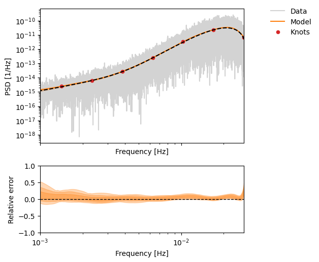
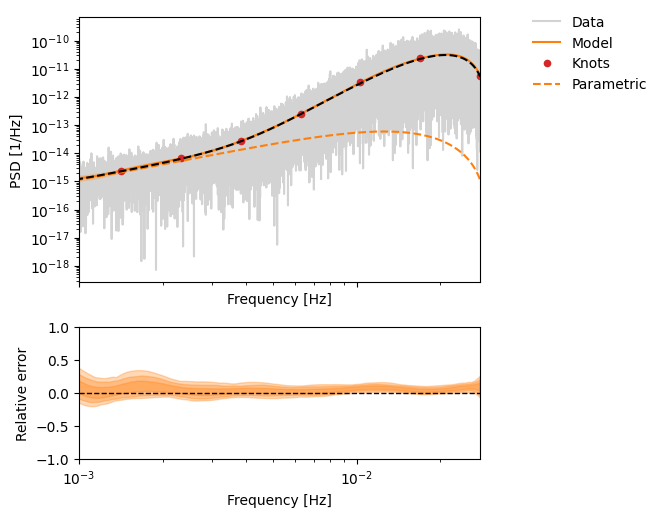

LISA demo#
In this demo, we grab some simulated data from zenodo and run a simple PSD estimation with P-splines.
For faster testing – we use a 10 day version of the file (downloading the 1 year file may take a while).
! pip install logPsplinePSD -q
Show code cell source
Hide code cell source
# %load_ext autoreload
# %autoreload 2
%matplotlib inline
Show code cell source
Hide code cell source
import dataclasses
import h5py
import matplotlib.pyplot as plt
import numpy as np
import os
import requests
import warnings
warnings.filterwarnings("ignore", category=RuntimeWarning)
def download(url: str, dest_folder: str):
if not os.path.exists(dest_folder):
os.makedirs(dest_folder) # create folder if it does not exist
filename = url.split("/")[-1].replace(
" ", "_"
) # be careful with file names
file_path = os.path.join(dest_folder, filename)
r = requests.get(url, stream=True)
if r.ok:
print("saving to", file_path)
with open(file_path, "wb") as f:
for chunk in r.iter_content(chunk_size=1024 * 8):
if chunk:
f.write(chunk)
f.flush()
os.fsync(f.fileno())
else: # HTTP status code 4XX/5XX
print(
"Download failed: status code {}\n{}".format(r.status_code, r.text)
)
def testmass_noise_asd(
freq,
asd=2.4e-15,
fknee=4e-4,
central_freq=2.81e14,
duration=365.25 * 24 * 3600,
fs=0.5,
):
"""
Test mass noise ASD in TMI carrier beatnote fluctuations.
Args:
freq (array): frequencies [Hz]
asd (float): test mass acceleration noise ASD [m/s^2/√Hz]
fknee (float): knee frequency [Hz]
central_freq (float): laser central frequency [Hz]
duration (float): observation duration [s]
fs (float): sampling frequency [Hz]
Returns:
array: noise ASD [Hz/√Hz]
"""
c = 299792458 # speed of light [m/s]
fmin = 1.0 / duration
# High frequency component
psd_highfreq = (
(2 * asd * central_freq / (2 * np.pi * c)) ** 2
* np.abs(
(2 * np.pi * fmin)
/ (
1
- np.exp(-2 * np.pi * fmin / fs)
* np.exp(-2j * np.pi * freq / fs)
)
)
** 2
* 1
/ (fs * fmin) ** 2
)
# Low frequency component
psd_lowfreq = (
(2 * asd * central_freq * fknee / (2 * np.pi * c)) ** 2
* np.abs(
(2 * np.pi * fmin)
/ (
1
- np.exp(-2 * np.pi * fmin / fs)
* np.exp(-2j * np.pi * freq / fs)
)
)
** 2
* 1
/ (fs * fmin) ** 2
* np.abs(1 / (1 - np.exp(-2j * np.pi * freq / fs))) ** 2
* (2 * np.pi / fs) ** 2
)
return np.sqrt(psd_lowfreq + psd_highfreq)
def oms_noise_asd(
freq,
asd=7.9e-12,
fknee=2e-3,
central_freq=2.81e14,
duration=365.25 * 24 * 3600,
fs=0.5,
):
"""
OMS noise ASD in ISI carrier beatnote fluctuations.
Args:
freq (array): frequencies [Hz]
asd (float): OMS displacement noise ASD [m/√Hz]
fknee (float): knee frequency [Hz]
central_freq (float): laser central frequency [Hz]
duration (float): observation duration [s]
fs (float): sampling frequency [Hz]
Returns:
array: noise ASD [Hz/√Hz]
"""
c = 299792458 # speed of light [m/s]
fmin = 1.0 / duration
# High frequency component
psd_highfreq = (asd * fs * central_freq / c) ** 2 * np.sin(
2 * np.pi * freq / fs
) ** 2
# Low frequency component
psd_lowfreq = (
(2 * np.pi * asd * central_freq * fknee**2 / c) ** 2
* np.abs(
(2 * np.pi * fmin)
/ (
1
- np.exp(-2 * np.pi * fmin / fs)
* np.exp(-2j * np.pi * freq / fs)
)
)
** 2
* 1
/ (fs * fmin) ** 2
)
return np.sqrt(psd_highfreq + psd_lowfreq)
def tdi_transfer_functions(freq, armlength=2.5e9):
"""
TDI transfer functions for test mass and OMS noise.
Args:
freq (array): frequencies [Hz]
armlength (float): LISA arm length [m]
Returns:
tuple: (tf_testmass, tf_oms) - transfer function amplitudes
"""
c = 299792458 # speed of light [m/s]
L = armlength / c # arm length in seconds
# Common TDI factor
common = (
16
* np.sin(2 * np.pi * freq * L) ** 2
* np.sin(4 * np.pi * freq * L) ** 2
)
# Test mass transfer function
tf_testmass = np.sqrt(common * (3 + np.cos(4 * np.pi * freq * L)))
# OMS transfer function
tf_oms = np.sqrt(4 * common)
return tf_testmass, tf_oms
def TM_model(
freq,
tm_asd=2.4e-15,
tm_fknee=4e-4,
central_freq=2.81e14,
duration=365.25 * 24 * 3600,
fs=0.5,
armlength=2.5e9,
):
"""
Complete test mass noise model in TDI.
Args:
freq (array): frequencies [Hz]
tm_asd (float): test mass acceleration noise ASD [m/s^2/√Hz]
tm_fknee (float): test mass knee frequency [Hz]
central_freq (float): laser central frequency [Hz]
duration (float): observation duration [s]
fs (float): sampling frequency [Hz]
armlength (float): LISA arm length [m]
Returns:
array: TDI test mass noise ASD [Hz/√Hz]
"""
noise_asd = testmass_noise_asd(
freq, tm_asd, tm_fknee, central_freq, duration, fs
)
tf_testmass, _ = tdi_transfer_functions(freq, armlength)
return tf_testmass * noise_asd
def OMS_model(
freq,
oms_asd=7.9e-12,
oms_fknee=2e-3,
central_freq=2.81e14,
duration=365.25 * 24 * 3600,
fs=0.5,
armlength=2.5e9,
):
"""
Complete OMS noise model in TDI.
Args:
freq (array): frequencies [Hz]
oms_asd (float): OMS displacement noise ASD [m/√Hz]
oms_fknee (float): OMS knee frequency [Hz]
central_freq (float): laser central frequency [Hz]
duration (float): observation duration [s]
fs (float): sampling frequency [Hz]
armlength (float): LISA arm length [m]
Returns:
array: TDI OMS noise ASD [Hz/√Hz]
"""
noise_asd = oms_noise_asd(
freq, oms_asd, oms_fknee, central_freq, duration, fs
)
_, tf_oms = tdi_transfer_functions(freq, armlength)
return tf_oms * noise_asd
def Total_model(
freq,
tm_asd=2.4e-15,
tm_fknee=4e-4,
oms_asd=7.9e-12,
oms_fknee=2e-3,
central_freq=2.81e14,
duration=365.25 * 24 * 3600,
fs=0.5,
armlength=2.5e9,
):
"""
Total noise model combining test mass and OMS noise in TDI.
Args:
freq (array): frequencies [Hz]
tm_asd (float): test mass acceleration noise ASD [m/s^2/√Hz]
tm_fknee (float): test mass knee frequency [Hz]
oms_asd (float): OMS displacement noise ASD [m/√Hz]
oms_fknee (float): OMS knee frequency [Hz]
central_freq (float): laser central frequency [Hz]
duration (float): observation duration [s]
fs (float): sampling frequency [Hz]
armlength (float): LISA arm length [m]
Returns:
array: Total TDI noise ASD [Hz/√Hz]
"""
tm_model = TM_model(
freq, tm_asd, tm_fknee, central_freq, duration, fs, armlength
)
oms_model = OMS_model(
freq, oms_asd, oms_fknee, central_freq, duration, fs, armlength
)
return np.sqrt(tm_model**2 + oms_model**2)
@dataclasses.dataclass
class LISAData:
t: np.ndarray
x2: np.ndarray
y2: np.ndarray
z2: np.ndarray
t0: float = dataclasses.field(init=False)
size: int = dataclasses.field(init=False)
dt: float = dataclasses.field(init=False)
fs: float = dataclasses.field(init=False)
data: np.ndarray = dataclasses.field(init=False)
duration: float = dataclasses.field(init=False)
oms_model: np.ndarray = None
tm_model: np.ndarray = None
total_model: np.ndarray = None
def __post_init__(self):
self.update_models()
def update_models(self, **kwargs):
self.size = len(self.t)
self.t0 = self.t[0]
self.dt = self.t[1] - self.t0
self.fs = 1 / self.dt
self.duration = self.size * self.dt
freq = np.fft.rfftfreq(self.size, d=self.dt)
self.oms_model = OMS_model(
freq, duration=self.duration, fs=self.fs, **kwargs
)
self.tm_model = TM_model(
freq, duration=self.duration, fs=self.fs, **kwargs
)
self.total_model = Total_model(
freq, duration=self.duration, fs=self.fs, **kwargs
)
self.data = np.vstack([self.x2, self.y2, self.z2]).T
@classmethod
def from_hdf5(cls, filename: str):
with h5py.File(filename, "r") as f:
t = np.array(f["t"][:])
x2 = np.array(f["X2"][:])
y2 = np.array(f["Y2"][:])
z2 = np.array(f["Z2"][:])
return cls(t=t, x2=x2, y2=y2, z2=z2)
# overide the [:] operator to return a truncated version of the data
def __getitem__(self, key):
if isinstance(key, slice):
# ensure that the slice is valid
start = key.start or 0
stop = key.stop or self.size
step = key.step or 1
if start < 0 or stop > self.size or step <= 0:
raise ValueError(f"Cannot truncate.. size is {self.size}.")
return LISAData(
t=self.t[key],
x2=self.x2[key],
y2=self.y2[key],
z2=self.z2[key],
)
def plot_periodograms(self, axes=None, include_model=True):
if axes is None:
fig, axes = plt.subplots(3, 1, figsize=(5, 8), sharex=True)
for ax, data, label in zip(
axes,
[self.x2, self.y2, self.z2],
["X2", "Y2", "Z2"],
):
freqs = np.fft.rfftfreq(self.size, self.dt)
psd = (np.abs(np.fft.rfft(data)) ** 2) * self.dt / self.size
ax.loglog(
freqs[1:], psd[1:], color="gray", alpha=0.5, lw=2, label=label
)
ax.set_ylabel("PSD [1/Hz]")
ax.set_ylim(bottom=10**-21)
if include_model:
ax.loglog(
freqs[1:],
self.oms_model[1:] ** 2,
"r--",
label="OMS model",
)
ax.loglog(
freqs[1:], self.tm_model[1:] ** 2, "b--", label="TM model"
)
ax.loglog(
freqs[1:],
self.total_model[1:] ** 2,
"k-",
label="Total model",
)
ax.legend()
axes[-1].set_xlabel("Frequency [Hz]")
plt.tight_layout()
return axes
@property
def duration_str(self):
# human readable duration
days = int(self.duration // (24 * 3600))
hours = int((self.duration % (24 * 3600)) // 3600)
minutes = int((self.duration % 3600) // 60)
seconds = int(self.duration % 60)
# only return a sensible unit
if days > 0:
return f"{days} days"
elif hours > 0:
return f"{hours} hrs"
elif minutes > 0:
return f"{minutes} min"
else:
return f"{seconds} s"
def __repr__(self):
return (
f"LISAData(size={self.size:,}, dt={self.dt}, "
f"fs={self.fs}, duration={self.duration_str})"
)
def get_model(self, frange=None):
if frange is None:
return self.total_model
else:
freqs = np.fft.rfftfreq(self.size, self.dt)
mask = (freqs >= frange[0]) & (freqs <= frange[1])
return (
self.total_model[mask],
self.oms_model[mask],
self.tm_model[mask],
)
ONE_YEAR = "https://zenodo.org/record/15698080/files/tdi.h5?download=1"
TEN_DAYS = "https://raw.githubusercontent.com/nz-gravity/test_data/main/lisa_noise/noise_4a_truncated/data/tdi.h5"
download(TEN_DAYS, dest_folder="data")
lisa_data = LISAData.from_hdf5("data/tdi.h5")
axes = lisa_data.plot_periodograms()
axes[0].set_title(f"{lisa_data}", fontsize=15);
saving to data/tdi.h5
from log_psplines.mcmc import run_mcmc
from log_psplines.datatypes import Timeseries
from log_psplines.plotting import plot_pdgrm
FMIN, FMAX = 5**-5, 6**-2
x2 = Timeseries(t=lisa_data.t, y=lisa_data.x2)
x2 = x2.standardise()
model, tm_model, oms_model = lisa_data.get_model(frange=(FMIN, FMAX))
pdgrm = x2.to_periodogram()
pdgrm = pdgrm.cut(FMIN, FMAX)
results_no_parametric = run_mcmc(
pdgrm=pdgrm,
sampler="mh",
n_knots=10,
knot_kwargs=dict(
method="log",
),
n_samples=2000,
n_warmup=2000,
)
results_with_parametric = run_mcmc(
pdgrm=pdgrm,
parametric_model=(oms_model / x2.std) ** 2,
sampler="mh",
n_knots=10,
knot_kwargs=dict(
method="log",
),
n_samples=2000,
n_warmup=5000,
)
Metropolis-Hastings with adaptive step sizes [cpu] [1536900715 689864229]
Sampling completed in 8.13 seconds
Final acceptance rate: 0.389 (target: 0.44)
ESS min: 1.3, max: 1598.1
Runtime: 8.13 sec
Metropolis-Hastings with adaptive step sizes [cpu] [1536900715 689864229]
Sampling completed in 11.27 seconds
Final acceptance rate: 0.449 (target: 0.44)
ESS min: 1.3, max: 1380.1
Runtime: 11.27 sec
Show code cell source
Hide code cell source
from log_psplines.arviz_utils.from_arviz import get_posterior_ci
def plot_result(idata, show_para: bool = False):
fig, axes = plt.subplots(
2,
1,
figsize=(5, 5),
sharex=True,
gridspec_kw={"height_ratios": [2, 1]},
)
fig, ax = plot_pdgrm(
ax=axes[0], idata=idata, yscalar=x2.std**2, show_parametric=show_para
)
ax.plot(pdgrm.freqs, model**2, "k--", label="TRUE")
ax.set_xlim(left=10**-3)
# plot relative error from true
posterior_ci = get_posterior_ci(idata)
for ci in posterior_ci:
ci = ci * x2.std**2
lower, upper = ci
axes[1].fill_between(
pdgrm.freqs,
(lower - model**2) / model**2,
(upper - model**2) / model**2,
color="tab:orange",
alpha=0.3,
)
axes[1].axhline(0, color="k", ls="--", lw=1)
axes[1].set_ylabel("Relative error")
axes[1].set_xlabel("Frequency [Hz]")
axes[1].set_xscale("log")
axes[1].set_yscale("linear")
axes[1].set_xlim(left=10**-3)
axes[1].set_ylim(-1, 1)
No parametric model (only splines)
plot_result(results_no_parametric, show_para=False)

With parametric model (OMS) + spline correction
plot_result(results_with_parametric, show_para=True)
